La historia de una marca eterna.
1947
Ferrari 125 S

Ferrari 159 S
1948
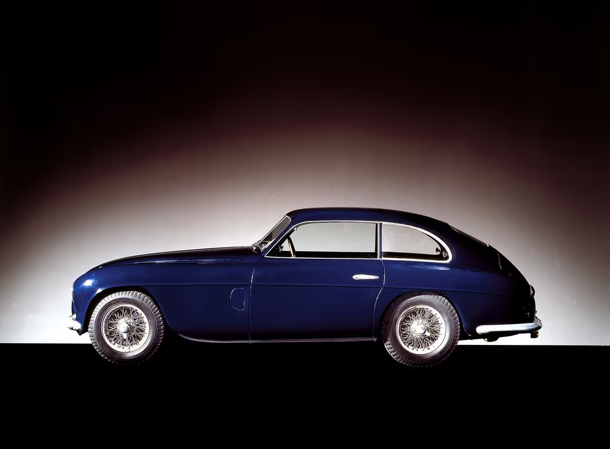
Ferrari 166 Inter
Ferrari 166 Inter Sport
Ferrari 166 MM
Ferrari 166 S
1950
Ferrari 195 Inter
Ferrari 195 S
Ferrari 275 S
Ferrari 340 America
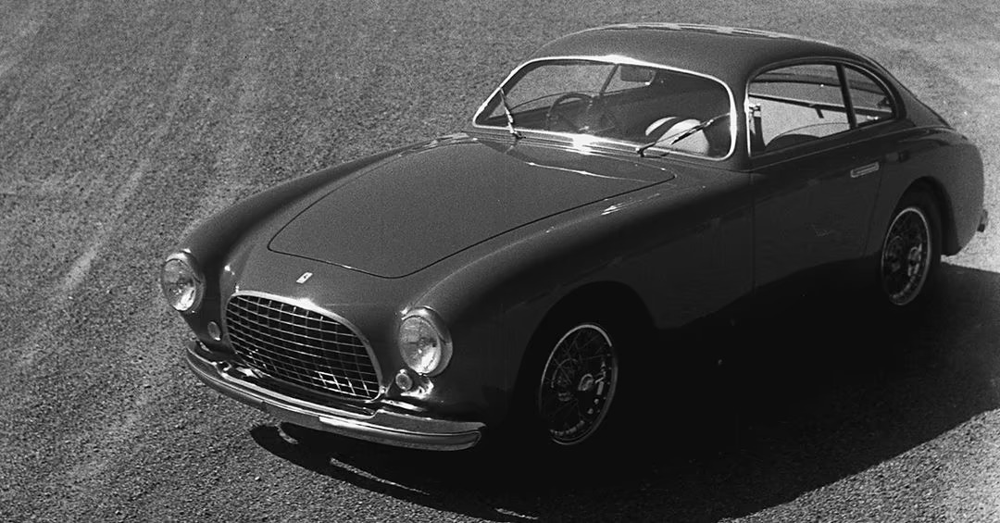
Ferrari 212 Export
Ferrari 212 Inter
Ferrari 343 America
1952
Ferrari 225 S
Ferrari 250 S
Ferrari 340 Mexico
1953

Ferrari 250 Europa
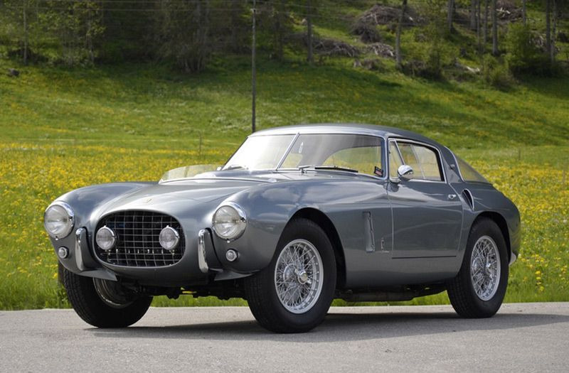
Ferrari 250 MM
Ferrari 340 MM
Ferrari 375 America
Ferrari 375 MM
Ferrari 500 Mondial
Ferrari 625 TF
Ferrari 735 S
1954
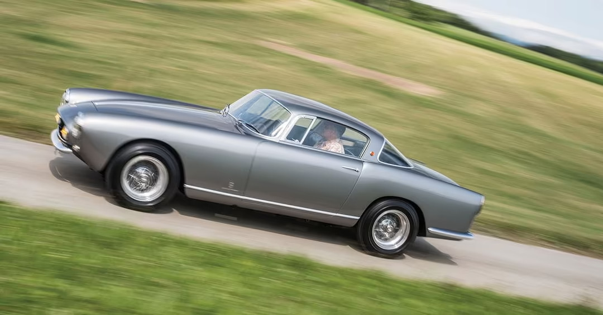
Ferrari 250 GT Coupé
Ferrari 250 Monza
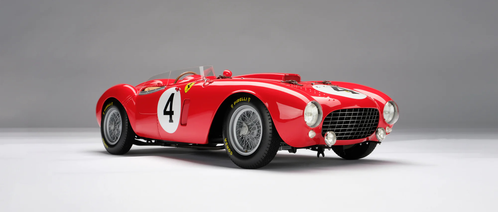
Ferrari 375 Plus
Ferrari 750 Monza
1955
Ferrari 376 S
Ferrari 735 LM
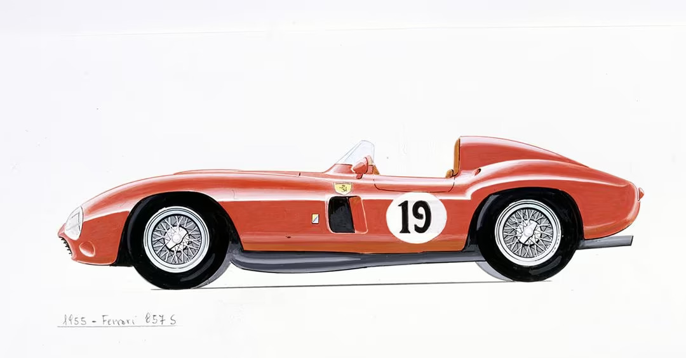
Ferrari 857 S
1956
Ferrari 250 GT Berlinetta
Ferrari 290 MM
Ferrari 410 S
Ferrari 410 Superamerica

Ferrari 500 TR
Ferrari 625 LM
Ferrari 860 Monza
1957
Ferrari 250 California
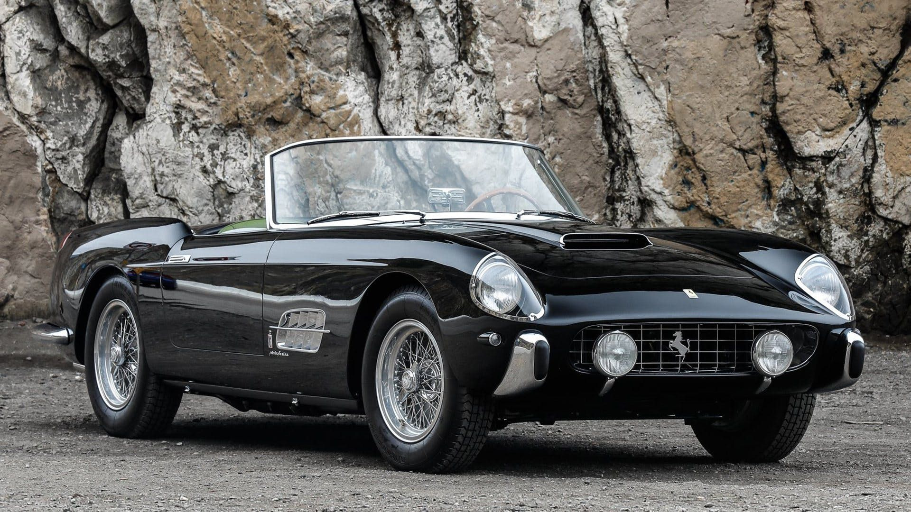
Ferrari 250 Cabriolet
Ferrari 250 Testa Rossa

Ferrari 290 S
Ferrari 315 S
Ferrari 335 S

Ferrari 500 TRC
1958
Ferrari 312 S

Ferrari 412 S
Ferrari Dino 196 S

Ferrari Dino 296 S
1959
Ferrari 250 GT Berlinetta Passo Corto
1960
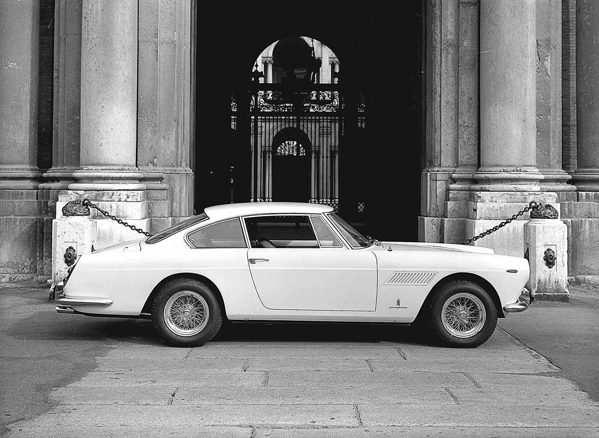
Ferrari 250 GT 2+2
Ferrari 400 Superamerica

Ferrari Dino 246 S
1961
Ferrari 246 SP
1962
Ferrari 196 SP
Ferrari 248 SP
Ferrari 250 GT Berlinetta Lusso

Ferrari 250 GTO

Ferrari 268 SP
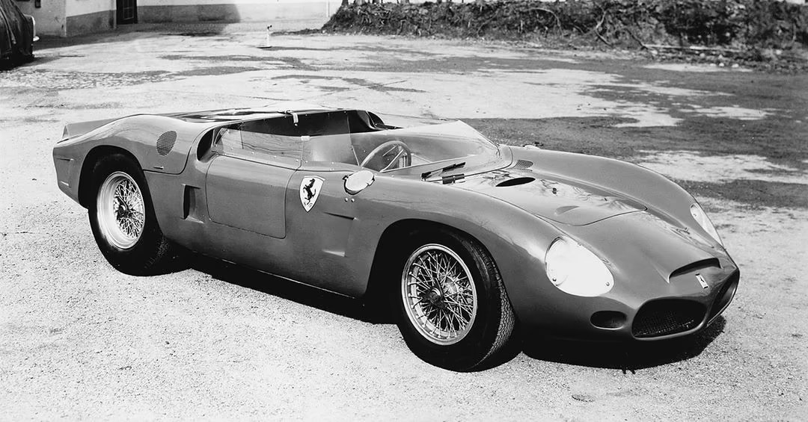
Ferrari 286 SP
Ferrari 330 LM

Ferrari 330 TR
1963
Ferrari 250 LM

Ferrari 250 P

Ferrari 330 P
1964

Ferrari 275 GTB

Ferrari 275 GTS
Ferrari 275 P
Ferrari 330 gt 2+2

Ferrari 500 Superfast
1965
Ferrari 275 GTB Competizione
Ferrari 275 P2

Ferrari 330 P2
Ferrari 365 P
Ferrari Dino 166 P
Ferrari 206 SP
1966
Ferrari 275 GTB/4
Ferrari 330 GTC
Ferrari 330 GTS
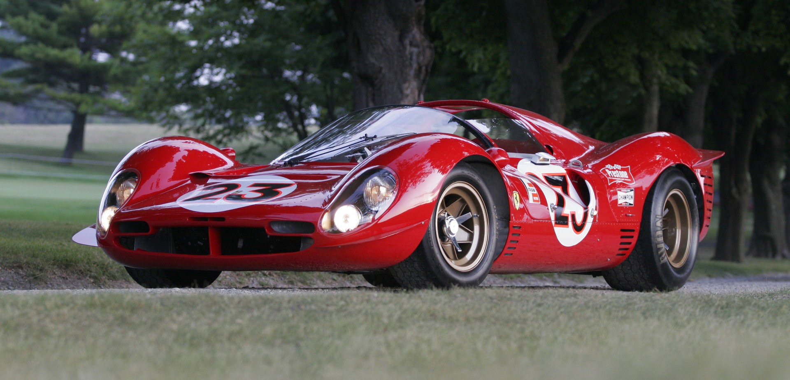
Ferrari 330 P3
Ferrari 365 California

Ferrari Dino 206 S
1967

Ferrari 330 P4
Ferrari 350 Can Am
Ferrari 365 GT 2+2
Ferrari 412 P

Ferrari Dino 206 GT
1968
Ferrari 375 GTB/4
Ferrari 375 GTC
Ferrari 612 Can Am
1969
Ferrari 212 E
Ferrari 312 P -Prototype-
Ferrari 365 GTS
Ferrari 365 GTS4
Ferrari Dino 246 GT
1970
Ferrari 512 M
Ferrari 512 S
1971
Ferrari 312 P
Ferrari 365 GTB4 BB

Ferrari 365 GTB4 Competizione
Ferrari 365 GTC 4
Ferrari 712 Can Am
1972
Ferrari 365 GT4 2+2
Ferrari Dino 246 GTS
1973
Ferrari Dino GT4
1975
Ferrari 308 GTB
Ferrari Dino 208 GT4
1976
Ferrari 400 Automatic
Ferrari 400 GT
Ferrari 512 BB
1977
Ferrari 308 GTS
1978
Ferrari 512 BB LM
1979
Ferrari 400 Automatic i
Ferrari 400 GTi
1980
Ferrari 208 GTB
Ferrari 208 GTS
Ferrari 308 GTBi
Ferrari 308 GTSi
Ferrari Mondial 8
1981
Ferrari 512 BBi
1982
Ferrari 208 GTB Turbo
Ferrari 308 GTB Quattrovalvole
Ferrari 308 Gts Quattrovalvole
Ferrari Mondial Quattrovalvole
1983
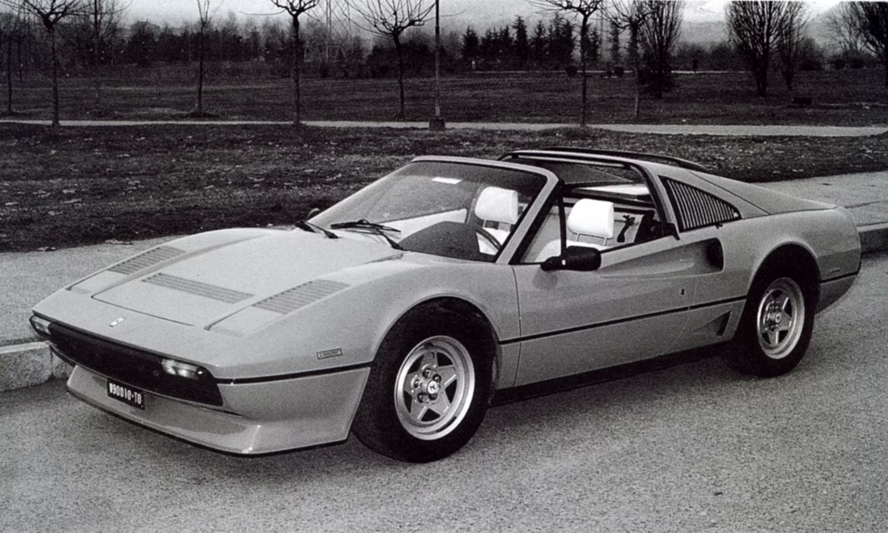
Ferrari 208 GTS Turbo

Ferrari Mondial Cabriolet
1984

Ferrari GTO
Ferrari Testarossa
1985
Ferrari 3.2 Mondial
Ferrari 3.2 Mondial Cabriolet
Ferrari 328 GTB

Ferrari 328 GTS
Ferrari 412
1986
Ferrari GTB Turbo
Ferrari GTS Turbo
1987
Ferrari 408 4RM
Ferrari F40
1989
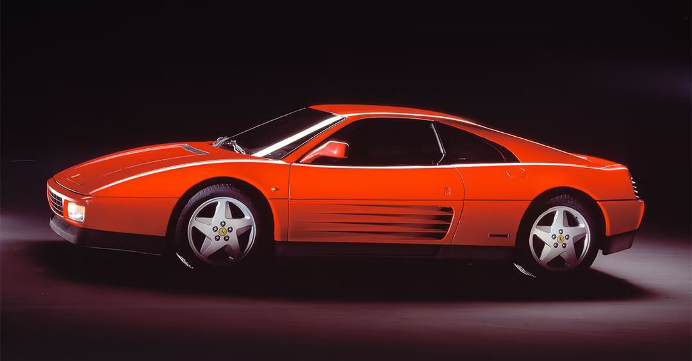
Ferrari 348 TB
Ferrari 348 TS
Ferrari F40 Competizione
Ferrari Mondial T
Ferrari Mondial T Cabriolet
1991
Ferrari 512 TR
1992
Ferrari 456 GT
1993
Ferrari 348 Challenge
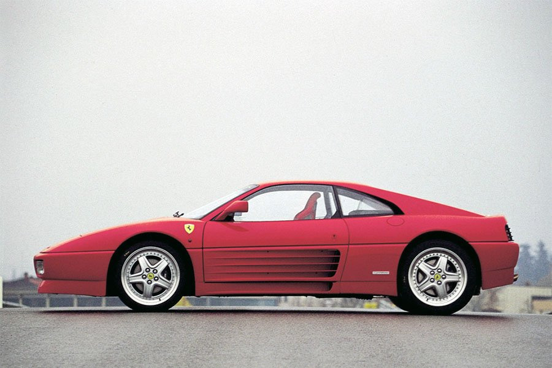
Ferrari 348 GT Competizione
Ferrari 348 GTB
Ferrari 348 GTS
Ferrari 348 Spider
1994
Ferrari 333 SP
Ferrari F355 Berlinetta
Ferrari F355 GTS
Ferrari F512M
1995
Ferrari F355 Challenge
Ferrari F355 Spider
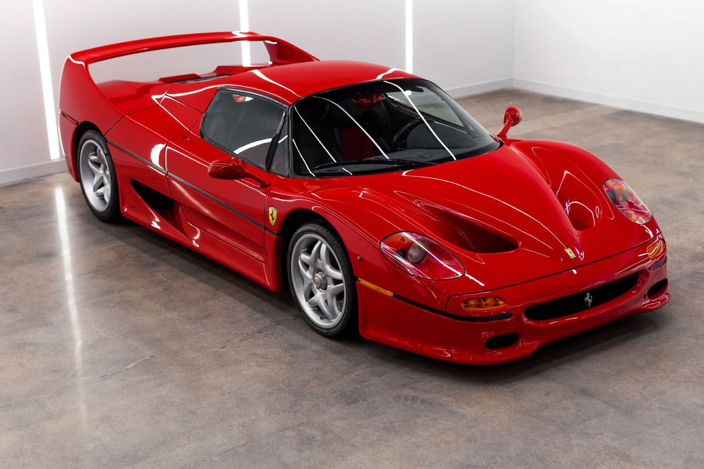
Ferrari F50
1996
Ferrari 456 GTA
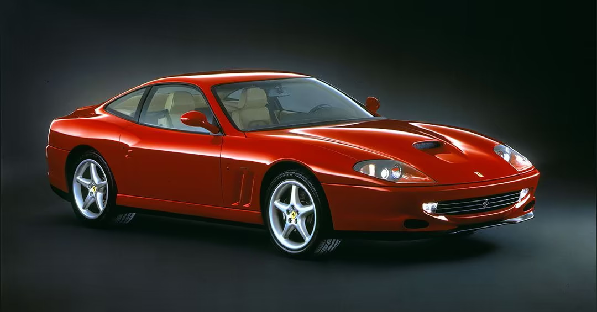
Ferrari 550 Maranello
Ferrari F50 GT
1997
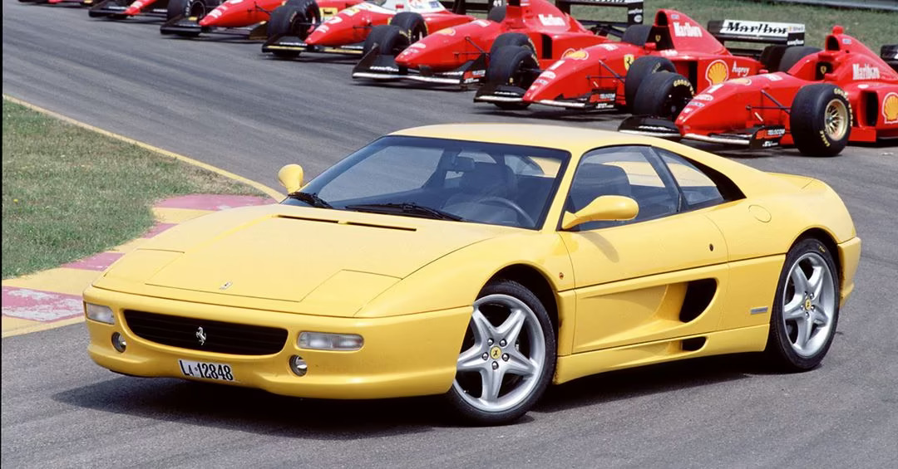
Ferrari 355 F1 Berlinetta
Ferrari 355 F1 GTS
Ferrari 355 F1 Spider
1998
Ferrari 456M GT
Ferrari 456M GTA
1999

Ferrari 360 Modena
2000
Ferrari 360 Challenge
Ferrari 360 Spider
Ferrari 550 Barchetta Pininfarina
2002
Ferrari 360 GT
Ferrari 575M Maranello
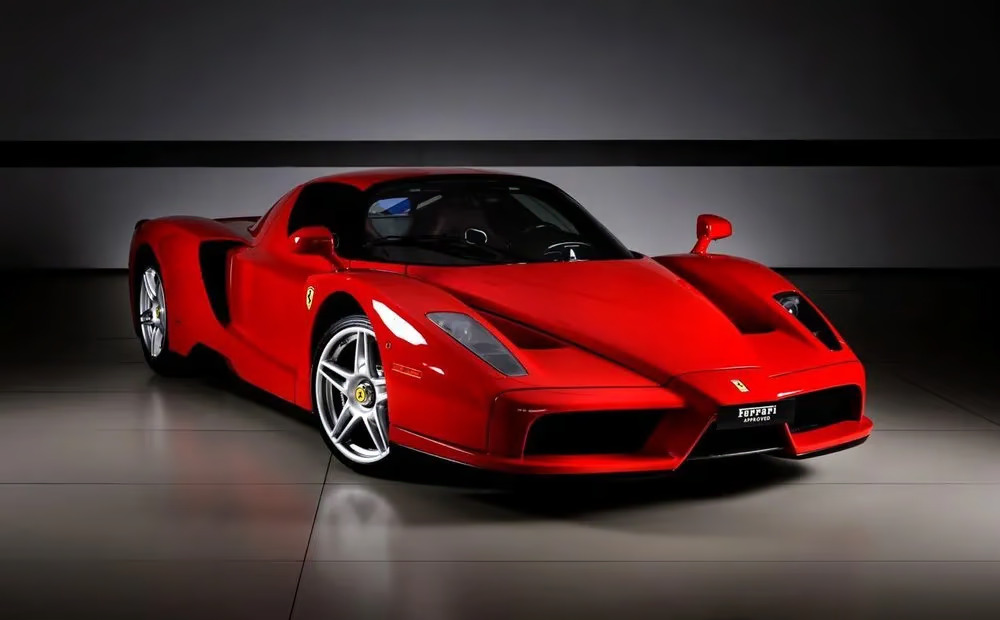
Ferrari Enzo
2003
Ferrari 575 GTC
Ferrari Challenge Stradale
2004
Ferrari 360 GTC
Ferrari 612 Scaglietti
Ferrari F430
2005
Ferrari F430 Spider